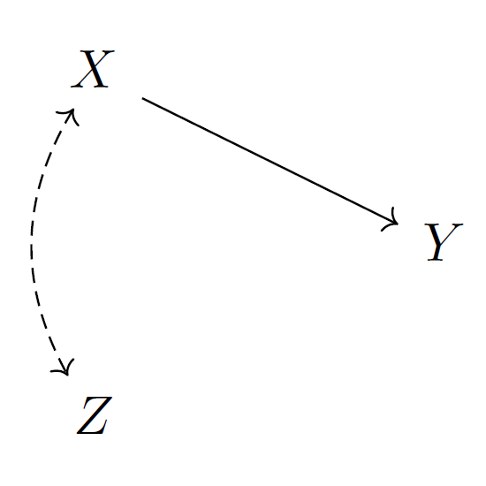
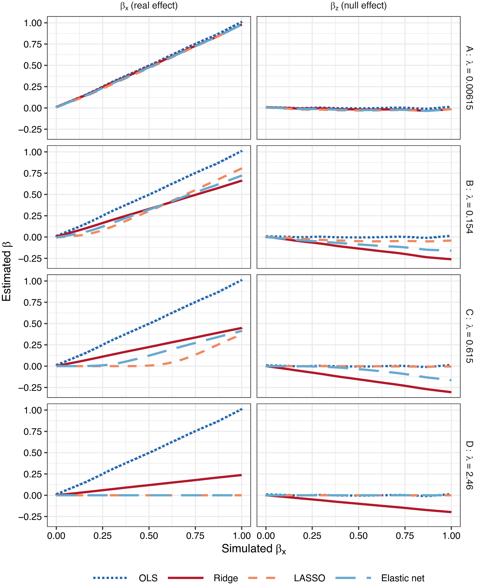

Quantitative methods
I am something of an accidental methodologist – I am generally more interested in substantive questions than research methods per se. Sometimes in the course of trying to answer those questions I end up delving into methodological issues. Perhaps because of this, a lot of my methodological research lives, slightly unloved, in the appendices of various other papers. For example, in the appendix to my paper about age and turnout I show that weighting to aggregate population targets (e.g. overall levels of turnout) also improves subgroup estimates of that outcome. And in the appendix to my paper about promissory representation, Jon and I came up with a novel method for analysing conjoint experiments using Bayesian multiple membership multiple classification (MMMC) models, which we further complicate by adding a finite mixture component.
My most explicitly methodological paper examines the impact of statistical regularization (e.g. ridge regression, LASSO etc) on statistical adjustment for confounders. Imagine you had a causal process that looks liked this: X has a causal effect on Y, X and Z are correlated, but Z has no causal effect on Y.

If you were to estimate a regression model: y ~ z You would spuriously find an association between Y and Z – in the language of causal graphs, there is a backdoor path between Y and Z – but you can block this backdoor path by estimating a model adjusting for X: y ~ x + z
If you add some sort of statistical regularization to this model, e.g. by using ridge regression, this will shrink the coefficient for X – shrinking coefficients is what we generally understand regularization as doing. However, the consequence of shrinking the X coefficient is that were will be residual variance in Y that is still correlated with X, and because it is correlated with X it will be correlated with Z. This residual variance can be accounted for by increasing the coefficient for Z, and so rather than regularization shrinking the Z coefficient, it can actually inflate it. Having closed the backdoor path by covariate adjustment, regularization reopens it. You can read the full paper here.

More generally, I am interested in Bayesian statistics, using causal graphs (directed acyclic graphs – DAGs) to think about how we can make causal inferences, statistical measurement, and using simulations to understand statistical processes. One day – if I ever find the time – I’ll write a paper about why you shouldn’t control for age, period, and cohort varying demographic variables in age-period-cohort models. I’d also like to work on a bigger project about the impact of measurement error on causal inferences.